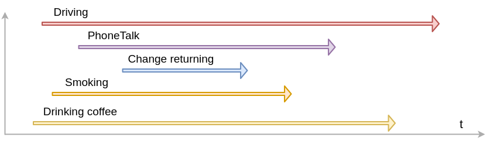
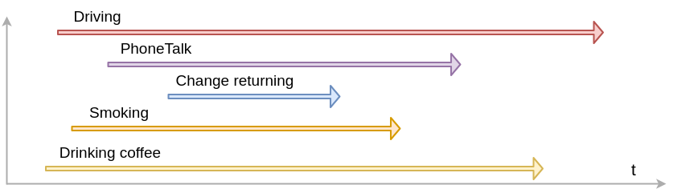

Parallel programming: multithreading and multiprocessing
Created for

Shape the concepts
Shape the concepts
Multitasking
 

{kind=link}
Multitasking
- Multitasking is implemented in Python by threading and multiprocessing.
- A hot topic, in the contest of rapid increase of the number of cores in contemporary microprocessors.
Preliminary
- N cores == N physical Central Processing Units(CPU) leaving in one chip.
- threads are something virtual. Multithreading performance is increased by logic for splitting tasks between hardware resources.
- Hyper-Threading Technology - to make OS to "see" more CPUs than the real physical units are.
Threads vs Processes

Threads vs Processes

Threads vs Processes
- Memory:
- A Process has its own individual memory segment, not shareable with other process. Inter process communication techniques are applied in order for process to share data
- Threads share same memory.
- A Thread lives in a Process. One Process can run multiple Threads.
- A python process has at least one thread - for the main programme.
Thread-based parallelism
Thread-based parallelism
Multithreading in Python
- threading module is the preferred way in Python for thread-based "parallelism" (a note abou GIL!)
- A thread is created by the
Threadclass constructor. - Once created, the thread could be started my
start()method - Other threads can call a thread’s
join()method. This blocks the calling thread until the thread whose join() method is called is terminated
Creating Thread objects
tr_obj = threading.Thread(target=None, name=None, args=(), kwargs={}, daemon=None)
target- function to be run in a threadnameis the thread name. By default, a unique name is constructed of the form "Thread-N" where N is a small decimal numberargsis the argument tuple for the target invocationkwargsis a dictionary of keyword arguments for the target invocationdaemon- if not None, a daemonic thread will be created.- A non-daemon thread blocks the main program to exit if they are not dead. Daemonic thread do not prevent the main program to exit, and will be killed by the main process when exiting.
Creating and running thread - example
import threading
import time
def worker(x):
tid = threading.currentThread().name;
print("x = {} in {}".format(x, tid))
time.sleep(2)
# create the tread
tr = threading.Thread(target=worker, args=(42,))
# start the thread:
tr.start()
# wait until thread terminates:
tr.join()
print("Worker did its job!")
A more useful example
- You can enjoy the speed of multithreading in Python, if the threaded workers are not CPU intensive.
- Get raw code of multi_vs_single_with_sleep.py
GIL - the Global Interpreter Lock
- GIL is a mechanism which prevents simultaneous working of multiple thread. So, Python's GIL prevents the "real" parallel multitasking mechanism, and instead implements a cooperative and preemptive multitasking.
- GIL @wiki.python.org
The GIL effect - example
- In CPU intensive task, multithreading is slower than sequential single-thread processing!
The problem of shared state - example
- Each thread increments the counter with 1. But at the end, counter value is not equal to the number of threads!
- It is even different on each execution!
import threading
import time
def worker():
global counter
tmp = counter
print("Before:",counter)
counter = tmp + 1
print("After:",counter)
counter = 0
# create some treads to count together:
thread_pool = []
for i in range(10000):
tr = threading.Thread(target=worker)
tr.start()
thread_pool.append(tr)
# wait for tread to finish:
for tr in thread_pool:
tr.join()
print("Workers counted:", counter)
Solution: Lock the critical sections
import threading
import time
def worker():
global counter
# lock the critical section:
lock.acquire()
tmp = counter
print("Before:",counter)
counter = tmp + 1
print("After:",counter)
lock.release()
counter = 0
# create a lock
lock = threading.Lock()
# create some treads to count together:
thread_pool = []
for i in range(10000):
tr = threading.Thread(target=worker)
tr.start()
thread_pool.append(tr)
# wait for tread to finish:
for tr in thread_pool:
tr.join()
print("Workers counted:", counter)
Process-based parallelism
Process-based parallelism
Multiprocessing in Python
- multiprocessing module is the built in module to create process-based parallelism in Python.
- A process is created by the
Processclass constructor. - Once created, the process could be started by
start()method - Other processes can call a process’s
join()method. This blocks the calling process until the process whose join() method is called is terminated
Creating Process objects
The multiprocessing package mostly replicates the API of the threading module
pr_obj = multiprocessing.Process(target=None, name=None, args=(), kwargs={}, daemon=None)
Programming guidelines for using multiprocessing
- There are certain guidelines and idioms which should be adhered to when using multiprocessing: Programming guidelines @python3 docs.
- But most important is to make sure that the main module can be safely imported by a new Python interpreter without causing unintended side effects (such as starting a new process)
- I.e. always use
if __name__ == '__main__':when using processes!
Creating and running process - example
import multiprocessing as mp
import time
def worker(x):
pid = mp.current_process().name;
print("x = {} in {}".format(x, pid))
time.sleep(2)
if __name__ == '__main__':
# create the process
p = mp.Process(target=worker, args=(42,))
# start the process:
p.start()
# wait until process completes:
p.join()
print("Worker did its job as separate Process!")
Sharing state between processes (inter-process comunication)
- The multiprocessing module defines the Queue class for sharing data between processes (using pipes and locks/semaphores)
- Also, it provides the
ValueandArrayclasses for Shared memory communication
class multiprocessing.Queue([maxsize])
No GIL effect on processes
- You can use the full power of multiprocessing if your system have multiple cores.
- Get raw code of GIL_effect.py
No need of Lock
- As processes do not share state, there is no need for lock:
Data Parallelism
- The Pool object in multiprocessing module offers a convenient means of parallelizing the execution of a function across multiple input values, distributing the input data across processes (data parallelism)
from multiprocessing import Pool
import time
def worker(n):
# for light work, the pool is not efficient, try with n**10
return n**1000
if __name__ == '__main__':
t =time.time()
# create the Pool:
p = Pool(processes=5)
result = p.map(worker, range(100000))
p.close()
p.join()
print("Pool took: ", time.time() - t)
# serial processing:
t = time.time()
result = []
for x in range(100000):
result.append(worker(x))
# print("Result: ", result)
print("Serial processing took: ", time.time() - t)
Processes vs Threads - when to use which
- Multiprocessing Pros:
- Takes advantage of multiple CPUs and cores
- Avoids GIL limitations
- Memory leaks in one process would not harm the others
- Child processes could be killed
- An intuitive and easy to use module APIs (very close to threading)
- Very useful with cPython for CPU-bound processing
- Cons:
- Separate memory space is harder to manage.
- Larger memory footprint
Processes vs Threads - when to use which
- Threading Pros:
- Lightweight and low memory footprint
- Shared memory between threads - easier to manage.
- Perfect for responsive UIs, DB Querying, Online Data Retrieval, I/O-bound and other applications where a lot of background work is done
- Cons:
- A memory leak in one thread will corrupt all threads
References
References
Readings
Videos
- Python Multithreading/Multiprocessing - 6 videos on theme by codebasics
These slides are based on
customised version of
framework